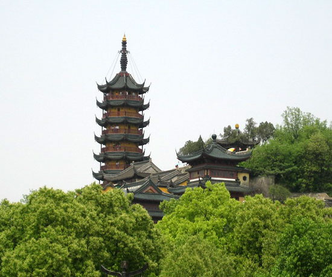

焦山，系“京口三山”名胜之一，向以山水天成、古朴幽雅闻名于世。它位于镇江市区东北，由象山景区、焦山景区、松寥山景区及焦东滩、桂花园景区等组成，总面积约1500亩左右。其中焦山景区为主体，是风区的核心。
焦山的寺庙、楼阁等名胜古迹颇具特色，大多掩映在山荫云林丛中，故有“山裹寺”之谚。焦山与金山不同，焦山高大雄伟，金山小巧玲珑；焦山以苍翠的竹木取胜，金山以辉煌的塔寺建筑争长。自古以来，就流传着焦山“山裹寺”、金山以“山裹寺”的民谚。
焦山还具有珍贵的“四古”。古寺庙（定慧寺）是明代之建筑物，主体建筑是绿瓦朱栏，十分古雅。古树木（六朝柏、宋代槐、明代银杏），多呈虬奇古怪之态，散布在山腰水畔寺前庙后，为山寺增添了一层幽邃雅静、青翠葱郁的色彩，极宜游宾休憩。此外，还有古碑刻、崖铭、古炮台，皆著名于世。
焦山屹立于大江之中，自古以来就是军事要地。唐代润州刺史和镇江节度史韩晃，曾造楼船和战舰30余艘，配备海军官兵5000多人在大江上操练。南宋抗金英雄韩世忠曾率领官兵树千人，驻扎焦山反击金兵之事，已成为历史佳话，英风千载，流传后世。明正德四年（1519年）七月十六日，直隶右都御史史丛兰因江西宁王反叛，亲自率领江淮一带水兵，在焦山江面进行操演。清道光二十二年（1842）七月，英帝发动了扬子江侵略战役，英军舰侵入长江时，曾遭到副都统海龄率领镇守焦山的青州兵和旗兵数千人，英勇抵抗和沉重打击英军，在近代反帝斗争史上，写下了光辉的一页。焦山古炮台也因此闻名于世。焦山东侧的山脚下，石块嶙峋，八个用石灰土夯实的炮堡，呈扇形，面对着长江的入海口，这就是著名的焦山炮台。整个炮台是暗堡式，每个炮堡都附有一座小弹药库，另有一大弹药库在炮堡南端门外偏西处。整体都用三合土分层浇灌而成，坚固异常。抗战时，炮台为日军摧毁，现存遗址，为省级文物保护单位。
焦山，山峰高耸，天堑幽深，怪石嶙峋，花卉争妍，香色迎人，很堪观赏。每逢秋月，艳红的枫树、盛开的菊花，吸引着四方游客，赢得诗人的赞美：“焦山秋意浓，丹黄叶不同。霜枫盛春花，古刹展新容”。1953年园林局在山麓地带新辟了焦山公园，园内设有假山、水池、曲桥、渡亭、花房、果园、苗圃、菊坛、松径、竹丛等美化基地，使焦山更加秀媚多姿、生机勃勃，苍翠欲滴。加至江面上帆船点点，龙舟竞驶，汽笛争鸣，飞天翱翔，名鱼跃水，俊鹘摩空，凫雁浮江，点缀其间，美不胜收。
位于长江中，山水天成，古朴幽雅，山中碑林石刻内涵丰富，被誉为“书法之山”，属于国家重点文物保护单位。焦山因寺庙楼阁等建筑均藏于山林深处，又有“焦山山裹寺”之说。焦山定慧寺是江南著名古刹之一。定慧寺始建于东汉献帝兴平元年（公元194年），初名普济庵，距今已1800余年。
唐代玄奘法师的弟子宝寂和鉴真大师的弟子神邕在此创建了大雄宝殿和佛堂。现今世界各地的高僧大德有不少曾求学于此。
焦山碑林内的《瘗鹤铭》，距今有1500年的历史，据传是东晋王羲之所书。是从隶书向楷书演变过程中的“碑中之王”“南北两铭”之一，即南有镇江《瘗鹤铭》，北有洛阳《石门铭》。如今，每年10月18日-20日，焦山都举办国际书法节。
焦山游览路线：不波亭－定慧寺－东泠泉－御碑亭－观澜阁－宝墨轩－焦山古炮台－华严洞－摩崖石刻－三诏洞－壮观亭－板桥读书处－百寿亭－吸江楼。
九霄万福宫(顶宫)
坐落于大茅峰顶，其建筑群依山而建，宏伟壮观，气势磅礴，为茅山“三宫五观”至首。每到香期，这里香客如云游人如织，是旅游及朝山进香首选之地。
元符万宁宫(印宫)
与大茅峰遥遥相望。“顶宫一炷香，印宫一颗印”，该宫原是摆放茅山镇山之宝“玉印”的地方，是叫印宫的原故。这里有载入吉尼斯纪录的露天老子神像、神奇的怪坡、奇特的天然蜂窝、神秘的地面“符图”等景点，是令你入奇、入迷的地方。
喜客泉
与茅山齐龄的喜客泉，自古就是旅游胜地，列茅山十九泉之首。二00三年初恢复对外开放。喜客泉三大怪“客来泉喜冒的怪、水向高处流的怪、泉水油面盖的怪”等待您的探索、猎奇!
华阳洞
清康熙帝曾题此洞为“第八洞天”，洞口刻有“华阳洞”三个大字，每字约有1平米，相传为苏东坡所书。唐宋时期，茅山道院最为鼎盛，皇家为祈求国泰民安、风调雨顺派员来此投金龙玉简、做道场、慰问道士，可谓岁岁不绝。在开发建设过程中，出土了巨骨类化石和手工制金铜器，洞内还发现了三块神奇的“响石”，给华阳洞增添了不少神秘感。还有21项体能训练项目是年青游客的旅游胜地。
仙人洞
又称蓬壶洞，洞分上中下三层，内有五厅，俗称“仙人四室一厅”，相传仙人曾在此下棋览息。洞内钟乳石、石笋形态各异，栩栩如生，有飞天瀑布、雄鹰展翅等20余处景点。览后不由感慨“天生一个仙人洞，无限风光在洞中”。
苏南抗战胜利纪念碑
“苏南抗战胜利纪念碑”碑名由原国防部长张爱萍将军题写，为纪念苏南抗战胜利五十周年，于1995年9月1日落成此碑，全高31.3米寓意由镇江市31.3万共产党员捐资所建。“碑前放鞭炮，空中响军号”被誉为“世界一绝”。许多建筑学家、声学专家对此奇特现象，经多次研究，仍未达成共识，相信您的到来一定会有新的见解。
新四军纪念馆
全国爱国主义教育示范基地，是学校、机关、企事业单位主题教育活动必到处。
新四军纪念馆座落于茅山镇，建筑独特，1985年建成，1988年重建占地面积约16000平方米，馆内展出各类实物及图片3000余件，并采用声、光、电等高科技手段，生动展示了当年新四军奋起抗日的英勇场面
茅山位于江苏省的西南部，地处句容市境内，是江苏省境内主要山脉之一。南北约长10公里，东西约宽5公里，面积50多平方公里。宛如一条绿色苍龙横卧于江苏省句容、金坛、溧水、丹徒、丹阳五大县（市）之间。主峰大茅峰，似绿色苍龙之首，也是茅山的最高峰，海拔372.5米, 虽不算高,但常言道：山不在高,有仙则灵! 风景区1986年被省政府年被列为省级森林公园批准为省甲级风景名胜区。1995。同时，她既是道教圣地，又是抗日根据地，其自然景观、人文景观、森林景观、革命历史观融为一体，胜似仙境。总规划面积32平方公里，九霄万福宫雄居其上，二茅峰、三茅峰蜿蜒而下，与主峰高低起伏，相映成辉。
茅山风景区有四大特点： 一、风景秀丽，景色怡人，素有九峰、十八泉、二十六洞、二十八池之胜景，还有众多星罗棋布的厅岩怪石，使茅山形成了一种奇特而又美妙的大自然风格。二、茅山以它的道教圣地而著称。茅山成为道教上清派的发祥地，被后人称为："第一福地，第八洞天"，享有"秦汉神仙府，梁唐宰相家"之美誉。 三、茅山还是新四军苏南抗日根据地的中心。茅山被毛主席列为全国六大抗日根据地之一。四、茅山是六、七十年代，知识青年上山下乡接受革命传统教育的地点，六七千名常州知青这里留下了一代青年的青春和热诚，为茅山的开发留下了不可磨来的功绩。
茅山因山势曲折，形似“已”字，故名句曲山，又名金陵地肺山，道家称“句曲之金陵，是养真之福境，成神之灵墟”。西汉年间，陕西咸阳茅氏三兄弟茅盈、茅固、茅衷来句曲山修道行善，益泽世人。后人为纪念茅氏功德，遂改句曲山为三茅山，简称茅山。主峰大茅峰海拔372.5米。
茅山，是著名的道教圣地。茅山道教渊源流长，相传早在距今5000多年前，就有高辛氏时代人展上公修炼，后有葛洪、杨羲、许谧、陶弘景等名道修炼、隐居茅山。茅山道教，在中国道教史上享有很高的声望和地位，曾赢得了“秦汉神仙府，梁唐宰相家”、“第一福地，第八洞天”等美誉。茅山道院上世纪七十年代末开始修复，1982年被国务院批准为首批对外开放的重点宫观。
茅山，是神圣的革命圣地。茅山因山区地势险要，西邻南京，北濒长江，东至淞沪，南下浙西，历来是兵家必争之地。1938年，陈毅、栗裕、张鼎丞率领中国国民革命军陆军新编第四军第一、二支队和先遣支队进入茅山地区，广泛发动群众，开展抗日游击战，创建敌后抗日根据地，成为全国六大山地抗日根据地之一。为中国人民的抗战胜利做出了可贵的贡献。茅山的红色之旅，已成为机关、学校、部队、企事业单位、党团组织进行爱国主义、革命传统教育的首选地。
茅山，是优美的风景胜地。茅山自然风光清新秀美，山区形胜独特，枝繁叶茂，景色迷人，自古就有九峰、十九泉、二十六洞、二十八池之美景。这里的山不高却秀雅，这里的水不深却澄清。春游茅山，山林滴翠，草木芬芳。薄雾轻如纱，夕阳宛如画。夏游茅山，绿树成荫，葱茏一片。游茅山，天高云淡，色彩斑斓。冬游茅山，银装素裹，雾松飘情。万簌俱静中聆听那道家仙乐，大有“花飞佛地三千里，人在瑶池十二层”之感！
茅山自1986年被江苏省人民政府批准为省甲级风景名胜区以来，特别是经过十年来的建设与开发，取得了显著的经济与社会效益。2001年，茅山风景区被国家旅游局评定为国家AAAA级旅游区，新四军纪念馆被中央宣传部定为全国爱国主义教育示范基地，2003年茅山风景区被江苏省人民政府、省文明委、省建设厅、省旅游局联合授予省级文明旅游区示范点的称号。目前，茅山风景区已形成了以九霄万福宫、元符万宁宫、老子神像、喜客泉、华阳洞天、仙人洞、新四军纪念馆、苏南抗战胜利纪念碑等为主体的旅游群系，年接待香客、游客超过100万人次。茅山以其独特的形式享誉海内外，苏南抗战胜利纪念碑的“碑前放鞭炮，空中响军号”的奇特现象堪称“世界一绝”，已被列为江苏省精品景点之列；高99尺、重106吨、由226块青铜板焊接而成的露天老子神像已入选大世界基尼斯纪录；热情好客的喜客泉，以其特有的三怪，使人留连忘返。